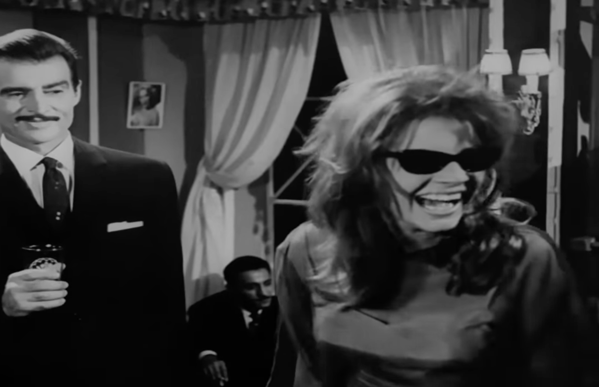
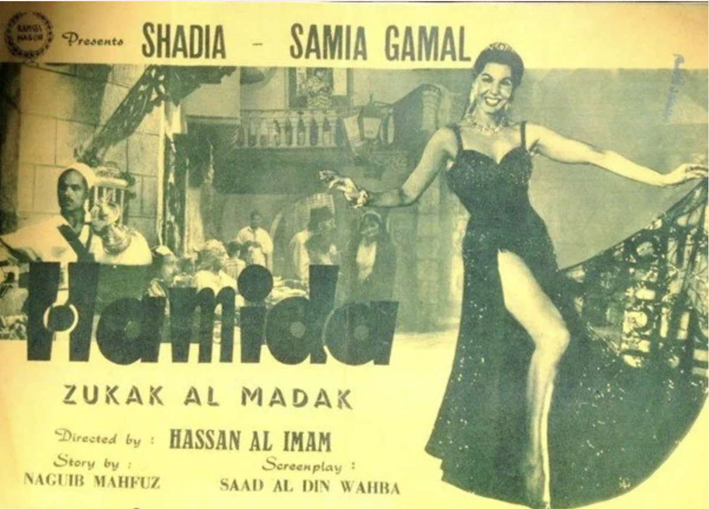
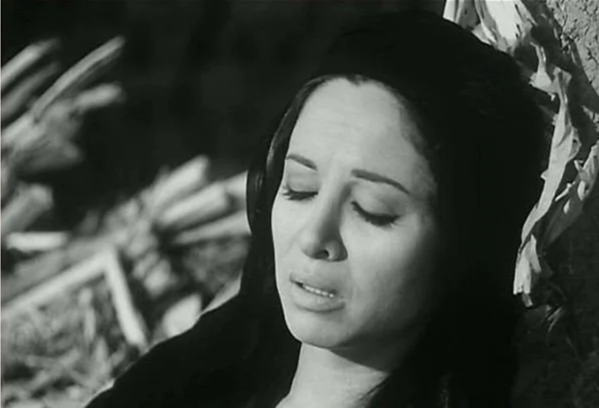

Three films exploring women's roles in post-independence Egypt
Here I discuss three films adapted between 1963 and 1965 from literary works written between 1947 and 1959, each centered around a woman. Hassan al-Imam's Midaq Alley (1963), Hussam al-Din Mostafa's film Al-Nathara al-Sawdaa (Black Shades, 1963) and Henry Barakat's Al-Haram (The Sin, 1965) were adapted from literary works by Naguib Mahfouz, Ihsan Abdel Quddous and Yusuf Idris respectively.
The films were made by men from men's stories — like most films at that time — at the height of Gamal Abdel Nasser's project for a new society built by working people. In each film a female protagonist, played by a remarkably expressive actor, is the driving force for reconciling modernization, and Egypt's gradual inclusion in the world economy through colonialism and two world wars, with traditional social structures and norms.
It is as if killing women through acting out paranoid fantasies exorcises society of the moral grip of hypocritical, patriarchal worldviews, producing much-needed change at the expense of women.
The three films can be seen as part of an international movement in former colonies of European powers to reclaim cinema, a trend of which Satyajit Ray's Apu Trilogy (1956-1959) is a significant example. They are also stylistically influenced by works of Italian neorealism, such as Roberto Rossellini's Rome, Open City (1946), Vittorio De Sica's The Bicycle Thief (1948), and Luchino Visconti's The Earth Trembles (1948), in attempting to honestly portray society, women, political upheaval and moral traditionalism.
The alley of forgetfulness
Midaq Alley (1947) was Mahfouz's sixth novel and his second set in modern times after several books that fictionalized Egypt's ancient history. It points to the epic storytelling that would characterize his later writing style, and like most early trials, it is occasionally simplistic or shallow. The characters are memorable but lack the sophisticated psychology of his later novels, and he clearly exposes his personal biases toward them, consigning those he dislikes to terrible fates — mostly the women. He was later celebrated for a "transparent realism," but in Midaq Alley it is not that transparent, and is rife with misogyny and homophobia. For example Maalem Kersha, an older gay man who is a drug dealer, thug and sexual predator, is one of Mahfouz's vilest characters.
Set at the end of World War II, the novel pivots around Hamida, an orphan raised in a little alley in Islamic Cairo by the alley's matchmaker. Hamida's life and decisions drive the story, but Mahfouz balances this by alternating her narration with that of other alley inhabitants. Yet he is unforgiving toward his female protagonists. Vicious, heartless, calculating, temperamental, roaring like a lion (in Arabic "lioness" is a ruder alternative to "shrew"), physically disgusted by children and the idea of motherhood, Hamida's aspirational gluttony symbolizes the ambitions of traditional people forced into a modernized economy and society with the British occupation. She is offset by her acquiescent, indolent and backwards neighbors, including her love interest Abbas al-Helw, whose humble, good-natured and conservative traditionalism is at odds with her desire to advance and break away from the "alley of poverty."

Poster of Zuqaq al-Madaq (Midaq Alley), 1963
Shadia is rather theatrical, prompted no doubt by Hassan al-Imam's usual sensationalism, but does an admirable job of playing Hamida in Imam's 1963 film version. She has none of that viciousness, and she certainly doesn't "roar" like Hamida does throughout the book; in the film, adapted by screenwriter Saad Eddin Wahba, Hamida seductively sings to the British troops. As well as Shadia's, other memorable performances include Mohamed Reda as the coffee-house owner, Akila Rateb as the chattering, vociferous matchmaker, and Youssif Shaaban as the mysterious dandy pimp.
It was 32-year-old Shadia's second Mahfouz-based film, after Kamal al-Sheikh's Al-Liss wal-Kilab (The Thief and the Dogs, 1962), and one of her first more serious roles, in contrast to her usual melodramas with Imam. But Imam botches the conversion of Mahfouz's novel to film. By removing the moral redeemer, al-Sayyed Radwan, from the story and altering the ending, he and Wahba axe Mahfouz's central moral preoccupation about the kind of mystical spirituality that pervaded Egypt's religiosity before independence, which Mahfouz seems to have believed could offer a solution to the paradoxes facing Egyptians confronted with both ruthless modernization and staunch traditionalism.
Both novel and film take a stab at the pre-independence monarchy for "accepting" British occupation (making a charade of parliamentary politics) as well as the people's acquiescence, their embracing of an unjust political reality. But the film's new ending makes the tragedy of women the impetus for change: only through Hamida's downfall can the alley finally shrug off its forgetful acquiescence.
Black shades and the miseries of patriarchy
Twenty-five-year-old Nadia Lotfy is iconic as a character embodying the rebelliousness of the 1960s bourgeoisie in Hussam al-Din Mostafa's film Al-Nathara al-Sawdaa (Black Shades, 1963). Her disheveled hair, black shades, skimpy dresses and devil-may-care attitude are mesmerizing. The camera loves her, and we too fixate on this blond bombshell who gulps her whisky as fast as she dumps her men. With a hoarse voice, insolent laugh and shameless sexual exploits, she's everything nearly all other film heroines before or after are not. But this is where the fun ends, because the film, based on Ihsan Abdel Quddous's 87-page novella from 1949, turns out to be two hours of non-stop misogyny and traditional patriarchal angst about female sexuality and choice, as high-principled citizen Omar tries to reform Mady (called Suzette in the book), "an animal with no soul," and restore her innocence and "original femininity."
Still from Al-Nathara al-Sawdaa (Black Shades), 1963
Mustafa's film departs from Abdel Quddous's book significantly, removing Mady's sadistic relationship with an Italian boy and suppressing her ravenous sexual appetite. The story takes a nationalist spin in its transition to film — this was right after the dissolution of the Egypt-Syria union and the height of Nasserist paranoia and propaganda, after all. A Syrian Christian with a French passport in the novella, Mady becomes an Egyptian Muslim in the film, as does her first lover, Aziz (played by bad boy Ahmed Ramzy). Omar (the stern Ahmed Mazhar) becomes a factory engineer who fights for the workers' rights in a blatant nod to the government's socialist propaganda.
Although Mustafa is hard to pin down as a director, with no particular style or genre (he has directed everything from melodramas to comedies to historical sagas to action films), he had a persistent penchant for exaggerated theatricality. Suzette is mysterious, understated and inert, but as Mady she becomes brash, silly and sometimes hysterical. Lotfy's riveting staginess and physical presence make Mady unforgettable, but Mustafa's sensational framing undoes her charm and mystery to create a sort of Breakfast at Tiffany's with a lot of added dramatic moralizing.
It's interesting to compare Omar's self-righteousness with the openness of Hussein, the partner of Laila in Henry Barakat's The Open Door, released the same year and based on a book by Latifa al-Zayyat. Laila and Mady are both are trying to find their place in a changing society that's at odds with their choices and ideas of freedom, and while Laila might not agree with Mady on the details of her lifestyle, both would no doubt sympathize with each other about how men are unable to see them beyond moral guardianship and traditional norms and values, to the detriment of their agency and sexuality.
The untouchables
Faten Hamama looks a little out of place as a landless farmhand struggling to get by in her much-praised role in Al-Haram (The Sin, 1965 — literally "the forbidden" or "the illicit"). But while maintaining her usual urbane refinement, the 34-year-old actor does radiate humanity in her empathetic, earnest portrayal of a working rural woman in the early 1950s. She looks youthful, happy and even mischievous, wearing traditional dress and a necklace of plastic beads. The black-and-white photography dramatically contrasts the black garment, the necklace and her face.

Still from al-Haram (The Sin), 1965
Based on Yusuf Idris's first full-length though short novel from 1959, the film is a searing account of the life of a landless laborer and her inevitable doom. It takes place before the 1952 coup, in a fiefdom in the Delta owned by one of the foreigners who dominated the landed gentry. Egypt's key export crop in the pre-1952 economy was cotton, and the book follows seasonal itinerant laborers (called al-terhila, "the itinerants" or "uprooted", and al-gharabwa, "the strangers") through the cotton-farming cycle. Collected "like cattle in trucks," they are brought to aristocrats' estates to rid the cotton crop from the devastating moth known as the Egyptian cotton leafworm by manually collecting its broods and larvae. They were paid 6 piastres for 12-hour shifts, the equivalent of LE25 today, adjusted for inflation.
In one of the most scathing and unabashedly leftist portrayals of subaltern Egyptians, Idris masterfully shows the dehumanization of these workers through the story of Aziza, a woman whose husband has bilharzia, which has been endemic in Egypt since ancient times. Nursing him and providing for their three children, Aziza's struggle takes a turn for the worse when she is raped.
Idris starkly shows how itinerant rural workers were socially and physically isolated from the rest of the village through the construction of taboos, as distrust of strangers and gradual alienation from different dialects, clothes and eating habits created pariahs or "untouchables." The instrumentalization of social differences by the landed gentry, the bourgeoisie that serve them and the villagers who receive the itinerant workers every year dehumanizes the whole group, justifying inhumane treatment and exploitation.
Barakat transformed Idris's story into a landmark of Egyptian cinema that was nominated for the Prix International at Cannes Film Festival. It was his 42nd film, and he was becoming known for his politically aware social dramas.
Faithful to the novel more or less (the character of the fool (Abdel Salam Mohamed) becomes more Chaplinesque than in the book), Barakat's film is really about the workers. Shooting on location with hundreds of extras, it is a feat of filmmaking. Cinematographer Diaa Mahdy uses light and shadow to create foreboding, while Soliman Gameel's folk troupe punctuate the film's soundtrack (composed by Gameel) with traditional percussive rhythms that act as a leitmotif for key scenes, a feature that became a hallmark of 1960s films tackling stories of injustice in Egypt's countryside.
In the novel, the children's curiosity to know "the strangers" helps re-humanize them, as does Aziza's tragedy in both book and film, showing how empathy can begin a process of recognition and respect. While Idris dwells on how changing land ownership patterns and the Free Officers' agrarian reforms changed the fate and function of the itinerant workers from a Marxist point of view, Barakat ends on a more ambiguous and open note, leaving the audience to make the future out for themselves.